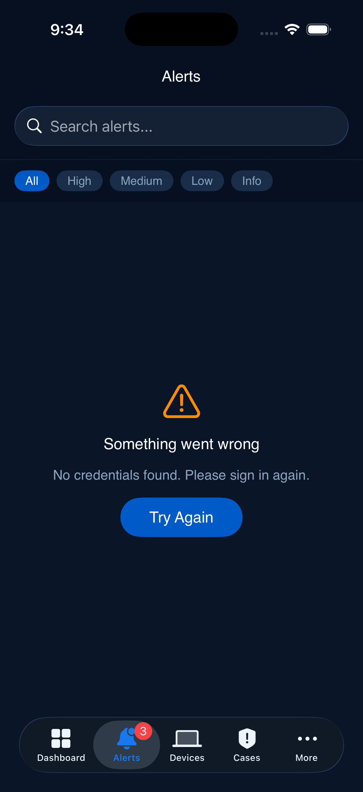
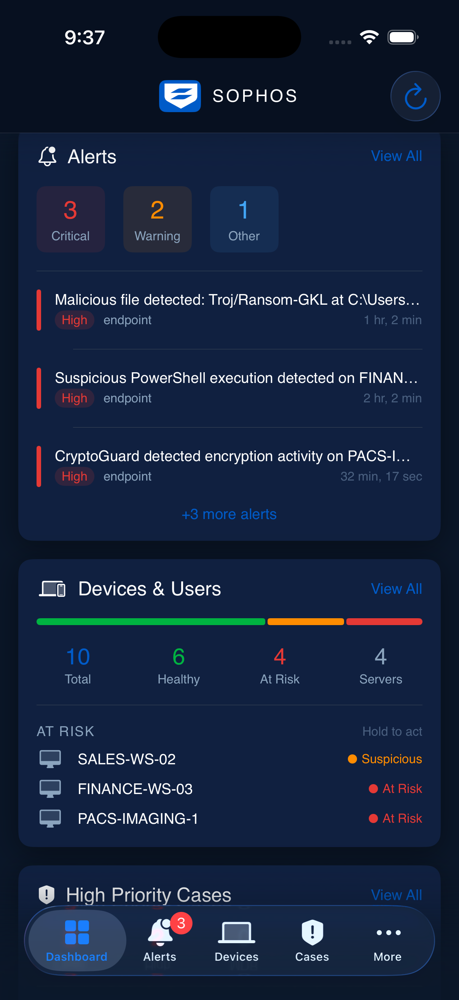
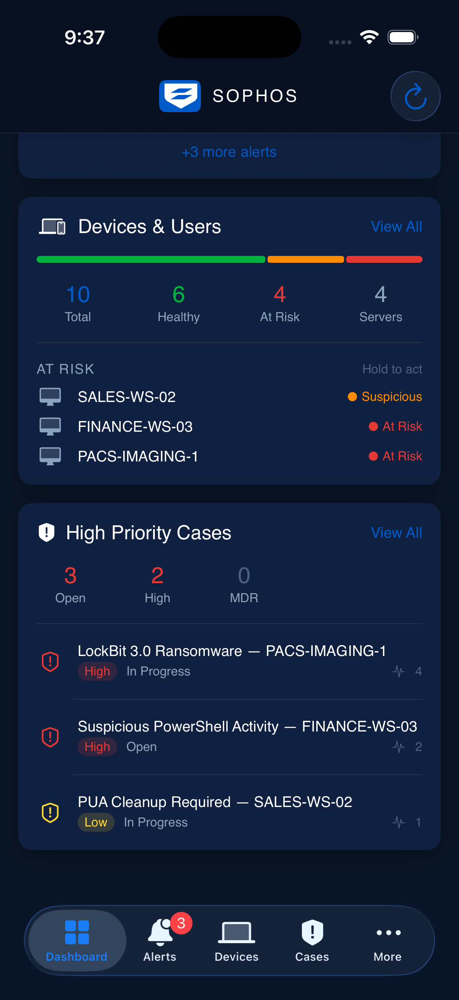
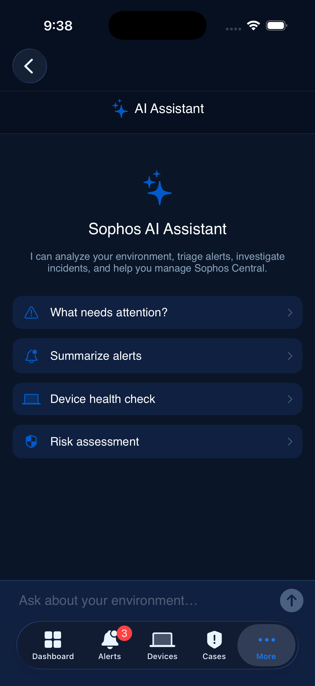
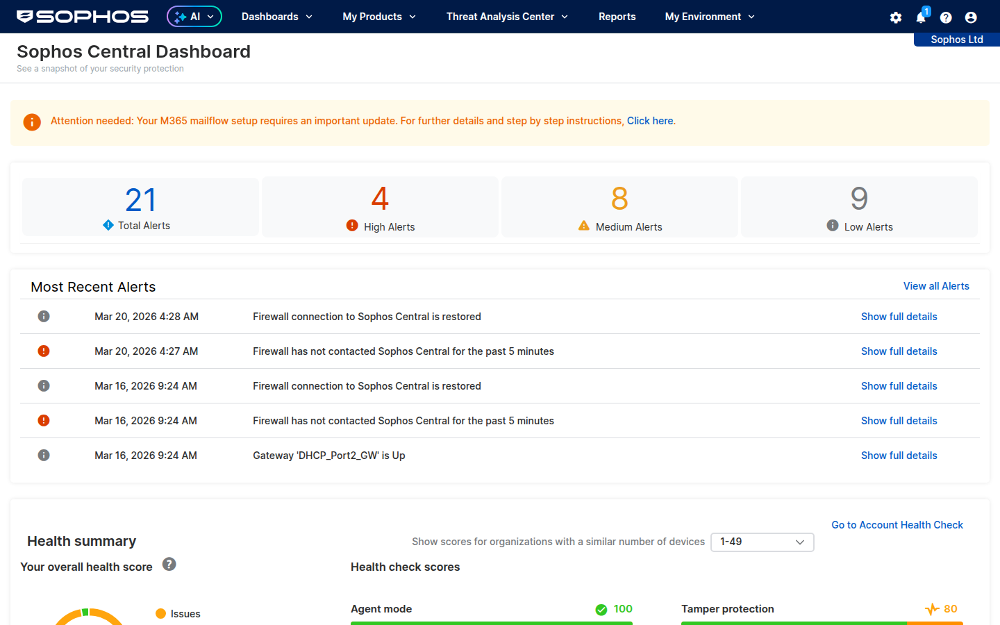

Sophos Central Mobile
A native iOS command center for Sophos Central — powered by AI, browser automation, and the Sophos Central API. Manage, investigate, and respond from your phone.
16Features
60%More Coverage
3Siri Shortcuts
0API Cost




What's Included
Clone the repo and run in Xcode: github.com/madmatdev/Sophos-Central-Mobile-App (branch: acosta-branch). Tap Demo Mode on the login screen to explore with realistic fake data — no tenant needed.
AI-Powered
AI Security Assistant
A conversational security analyst powered by Groq's llama-3.3-70b model — automatically loaded with your current environment data for context-aware analysis and recommendations.
What the AI Assistant can do
- Alert Triage — "What needs attention?" analyzes all current alerts with severity ratings and prioritized recommendations.
- Investigation — "Why is PACS-IMAGING-1 compromised?" correlates alerts, device health, and MITRE ATT&CK patterns.
- Remediation — "How do I respond to CryptoGuard?" provides step-by-step incident response with specific endpoint actions.
- Executive Summaries — "Summarize this week for my manager" generates non-technical security status reports.
- Live Discover Queries — "Find running PowerShell processes" generates SQL queries you can execute directly.
- Trend Analysis — "Compare this week vs last" identifies patterns and emerging threats across your environment.
- Threat Intel Context — "What is Troj/Ransom-GKL?" explains threat behavior, impact, and recommended actions.
Setup: Get a free API key at console.groq.com, paste it in Settings → AI Configuration. The assistant automatically loads your current alerts, devices, health scores, and cases as context.
Additional capabilities
Smart Notifications with AI triage
iOS Widgets (small & medium)
Siri Shortcuts (3 voice intents)
Watchlist for tracking items
Exclusion management (CRUD)
Demo mode for customer demos
Offline caching (SwiftData)
Coverage
API + Playwright: Beyond the Console
The Sophos Central API covers ~40% of the web console. Browser automation fills the other 60% — giving you mobile access to Live Discover, threat graphs, and policy management.

Live capture of Sophos Central dashboard via Playwright backend
| Capability | API Only | Mobile App |
|---|
| Dashboard & Health Score | ✅ | ✅ |
| Alert Management | ✅ | ✅ |
| Device Isolation & Scans | ✅ | ✅ |
| Case Management | ✅ | ✅ |
| Exclusion Management | — | ✅ NEW |
| Tamper Protection Control | — | ✅ NEW |
| Firewall Monitoring | — | ✅ NEW |
| Live Discover Queries | — | ✅ Playwright NEW |
| Threat Graphs | — | ✅ Playwright NEW |
| AI-Powered Triage | — | ✅ Groq AI NEW |
| Threat Intel (VT / AbuseIPDB) | — | ✅ NEW |
| Smart Notifications | — | ✅ AI triage NEW |
| iOS Widgets & Siri | — | ✅ NEW |
| Multi-Tenant | — | ✅ NEW |
| Demo Mode | — | ✅ NEW |
Playwright Backend — Dockerized deployment
The Playwright backend runs as a Docker container on Mac, Windows, or Linux. It authenticates to Sophos Central's web console using a headless Chrome instance with built-in noVNC for the initial 2FA login.
1
docker compose up — builds and starts the container with Chrome, Node, and VNC pre-installed.
2
Open localhost:6080 — noVNC web viewer shows the Chrome window. Complete your 2FA login.
3
Press Enter — session saves to disk. The backend switches to headless mode and serves the REST API.
4
API ready — screenshots, Live Discover, threat graphs, and policies available at port 18870.
Session persistence: The browser session is saved to a Docker volume and survives container restarts. Re-login is only needed when the Sophos Central session expires (typically days).
Architecture
How It Works
Three layers working together — the Sophos API for data, Playwright for browser automation, and Groq AI for intelligence.
📱 iOS App (SwiftUI)
Dashboard · Alerts · Devices · Cases · AI Chat · Watchlist · Widgets · Siri
↕
Sophos Central API
Alerts, Endpoints, Cases, Health, Isolation, Exclusions
Playwright Backend
Live Discover, Threat Graphs, Policies, Screenshots
Groq AI (LLM)
Triage, Investigation, Remediation, Reports
↕
☁️ Sophos Central
Your security environment — endpoints, firewalls, email, XDR
Getting Started
Deploy in minutes
1
Clone & Build — git clone the repo, run xcodegen generate, open in Xcode, build for simulator or device.
2
Start Playwright — Run docker compose up in the playwright-backend folder. Open localhost:6080 for 2FA login.
3
Configure AI — Get a free Groq API key at console.groq.com. Paste in Settings → AI Configuration.
4
Connect or Demo — Enter Sophos Central API credentials, or tap Demo Mode for instant exploration with fake data.
Who it's for
SEs — Demo to customers, multi-tenant management
Admins — Respond to incidents on the go
SOC Teams — Mobile triage and investigation
MSPs — Multi-org visibility from one app
Technical requirements
- iOS 18+ — SwiftUI, SwiftData, App Intents
- Xcode 16+ with iOS 26 SDK for building
- Docker for the Playwright backend (Mac, Windows, or Linux)
- Sophos Central account with API credentials (Client ID + Client Secret)
- Groq API key (free) for the AI assistant — optional but recommended
Repository: github.com/madmatdev/Sophos-Central-Mobile-App (branch: acosta-branch)
Playwright Backend: See playwright-backend/README.md for Docker deployment instructions.